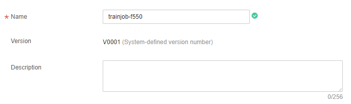
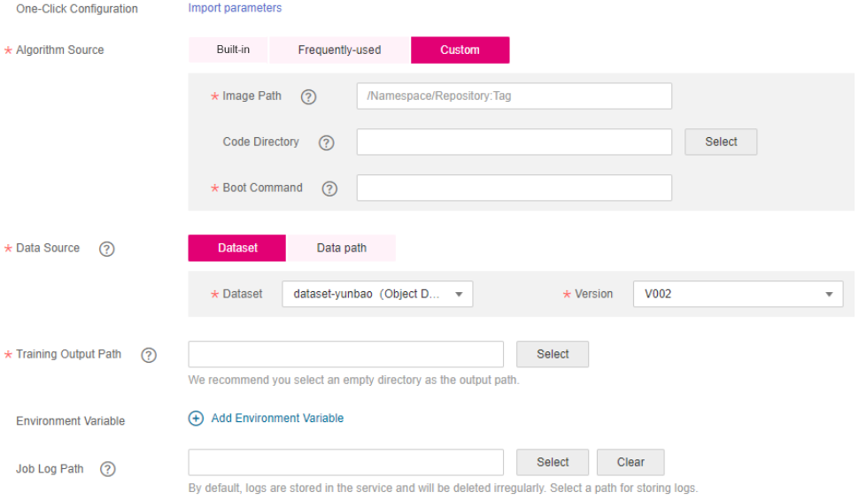
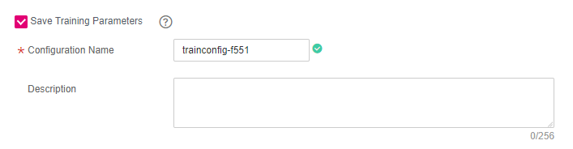

If the framework used for algorithm development is not a frequently-used framework, you can build an algorithm into a custom image and use the custom image to create a training job.
Prerequisites
- Data has been prepared. Specifically, you have created an available dataset in ModelArts, or you have uploaded the dataset used for training to the OBS directory.
- If the algorithm source is Custom, create an image and upload the image to SWR. For details, see Creating and Uploading a Custom Image.
- The training script has been uploaded to the OBS directory.
- At least one empty folder has been created on OBS for storing the training output.
- The account is not in arrears because resources are consumed when training jobs are running.
- The OBS directory you use and ModelArts are in the same region.
Precautions
- In the dataset directory specified for a training job, the names of the files (such as the image file, audio file, and label file) containing data used for training contain 0 to 255 characters. If the names of certain files in the dataset directory contain over 255 characters, the training job will ignore these files and use data in the valid files for training. If the names of all files in the dataset directory contain over 255 characters, no data is available for the training job and the training job fails.
- In the training script, the Data Source and Training Output Path parameters must be set to the OBS path. Use the to perform read and write operations in the path.
Creating a Training Job
- Log in to the ModelArts management console. In the left navigation pane, choose Training Management > Training Jobs. By default, the system switches to the Training Jobs page.
- In the upper left corner of the training job list, click Create to switch to the Create Training Job page.
- Set related parameters.
- Set the basic information, including Name, Version, and Description. The Version information is automatically generated by the system and named in an ascending order of V001, V002, and so on. You cannot manually modify it.
Specify Name and Description according to actual requirements.
Figure 1 Setting basic information about the training job
 - Set job parameters, including the data source, algorithm source, and more. For details, see Table 1.Figure 2 Custom as the algorithm source
Table 1 Job parameters Parameter
Sub-Parameter
Description
One-Click Configuration
-
If you have saved job parameter configurations in ModelArts, click One-Click Configuration and select an existing job parameter configuration as prompted to quickly complete parameter setting for the job.
Algorithm Source
Custom
For details about custom image specifications, see Specifications for Custom Images Used for Training Jobs.
- Image Path: SWR URL after the image is uploaded to SWR. For details about how to upload an image, see Creating and Uploading a Custom Image.
- Code Directory: OBS path for storing the training code file.
- Boot Command: Command to boot the training job after the image is started. Set this parameter based on site requirements. If the custom image is based on a basic ModelArts image, set parameters by referring to Creating a Training Job Using a Custom Image (GPU).
Data Source
Dataset
Select an available dataset and its version from the ModelArts Data Management module.
- Dataset: Select an existing dataset from the drop-down list. If no dataset is available in ModelArts, no result will be displayed in the drop-down list.
- Version: Select a version according to the Dataset setting.
Data path
Select the training data from your OBS bucket. On the right of the Data path text box, click Select. In the dialog box that is displayed, select an OBS folder for storing data.
Training Output Path
-
Storage path of the training result
NOTE:To minimize errors, select an empty directory for Training Output Path. Do not select the directory used for storing the dataset for Training Output Path.
Environment Variable
-
Add environment variables based on your image file. This parameter is optional. You can click Add Environment Variable to add multiple variable parameters.
Job Log Path
-
Select a path for storing log files generated during job running.
- Select resources for the training job.
Table 2 Resource parameters Parameter
Description
Resource Pool
Select resource pools for the job.
CPU- and GPU-based public resource pools are supported. Their application scenarios and charges are different.
Type
If Resource Pool is set to Public resource pools, select a resource type. Available resource types are CPU and GPU.
The GPU resource delivers better performance, and the CPU resource is more cost effective. If the selected algorithm has been defined to use the CPU or GPU, the resource type is automatically displayed on the page. Select the resource type as required.
NOTE:- If GPU resources are used in training code, you must select a GPU cluster when selecting a resource pool. Otherwise, the training job may fail.
Specifications
Select a resource flavor based on the resource type.
Compute Nodes
Set the number of compute nodes. If you set Compute Nodes to 1, the standalone computing mode is used. If you set Compute Nodes to a value greater than 1, the distributed computing mode is used. Select a computing mode based on the actual requirements.
- Select whether to save the parameters of the training job.Figure 3 Setting training job parameters
Table 3 Parameters related to parameter configuration saving Parameter
Description
Saving Training Parameters
If you select this option, the parameter settings of the current job will be saved to facilitate subsequent job creation.
Select Save Training Parameters and specify Configuration Name and Description. After a training job is created, you can switch to the Job Parameters tab page to view your saved job parameter settings. For details, see Managing Job Parameters.
- Set the basic information, including Name, Version, and Description. The Version information is automatically generated by the system and named in an ascending order of V001, V002, and so on. You cannot manually modify it.
- Confirm that the information is correct and click Submit. Generally, training jobs run for a period of time, which may be several minutes or tens of minutes depending on the amount of your selected data and resources.
After a custom image job is created, the system authorizes ModelArts to obtain and run the image by default. When you run a custom image job for the first time, ModelArts checks the custom image. For details about the check, see Specifications for Custom Images Used for Training Jobs. You can view the cause of the check failure in the log and modify the custom image based on the log.
After the image is checked, the background starts the custom image container to run the custom image training job. You can switch to the training job list to view the basic information about training jobs. In the training job list, Status of the newly created training job is Initializing. If the status changes to Successful, the training job ends and the model generated is stored in the location specified by Training Output Path. If the status of a training job changes to Running failed. Click the name of the training job and view the job logs. Troubleshoot the fault based on the logs.

- After an image is reviewed, the image does not need to be reviewed again when being used to create training jobs again.
- The default user of a custom image must be the user whose UID is 1101.